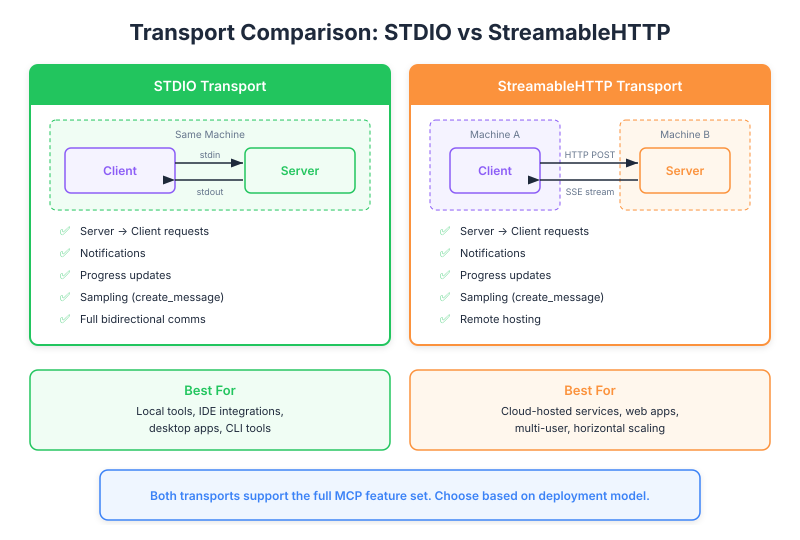

| Item | Detail |
|---|---|
| Exam Domain | D2 — Tool Design & MCP Integration (18%) |
| Task Statements | 2.1 (MCP transport selection), 2.3 (server lifecycle management) |
| Source | model-context-protocol-advanced-topics / 03-transports / Lesson 11 |
Stdio is MCP's "local-only" transport — like having a direct phone line between two people in the same building, offering full functionality but zero remote access.

Think of MCP transports as delivery methods for messages:
As a PM, your transport choice directly impacts what features your product can support.
The MCP client (your AI application) launches the server as a helper program on the same computer. They communicate through a direct pipeline — like two colleagues passing notes back and forth.
The handshake — before any work begins, three messages establish the connection:
| Step | What Happens | Business Analogy |
|---|---|---|
| 1. Initialize Request | Client introduces itself | "Hi, I'm the AI app, I need tools X, Y, Z" |
| 2. Initialize Result | Server responds with capabilities | "Got it, I can provide tools A, B, C" |
| 3. Initialized Notification | Client confirms | "Great, let's start working" |
Stdio supports all four communication patterns:
| Pattern | Business Meaning | Example |
|---|---|---|
| Client asks server | AI requests a tool | "Look up this customer's order" |
| Server answers client | Tool returns result | "Here's the order details" |
| Server asks client | Server needs input | "I need user approval to proceed" |
| Client answers server | Client provides input | "User approved the refund" |
The last two patterns (server-initiated) are critical for agentic workflows where the server needs to request human approval or additional context.
💡 Key Insight
When evaluating MCP server vendors, ask: "Does your transport support server-initiated requests?" If not, features like human-in-the-loop approval flows won't work.
| Question | If Yes → Stdio | If No → Consider HTTP |
|---|---|---|
| Is the server on the same machine? | Yes | Need remote |
| Is this for development/testing? | Yes | Production at scale |
| Do we need ALL MCP features? | Yes | Can sacrifice some |
| Single user at a time? | Yes | Multi-user needed |
Stdio gives you 100% of MCP functionality but limits you to local, single-machine deployment.
| Scenario | Transport Impact |
|---|---|
| Developer tools (IDE plugins) | Stdio is perfect — runs locally alongside the IDE |
| SaaS product with AI features | Cannot use Stdio — need remote transport |
| Internal enterprise tool on local machines | Stdio works well for desktop deployment |
| Cloud-hosted AI agent | Must use StreamableHTTP or similar |
| Front | Back |
|---|---|
| In business terms, what is Stdio transport? | A direct local communication channel — like internal mail within one building. Full service, zero remote capability. |
| What product constraint does Stdio impose? | Server must run on the same machine as the client — no remote or cloud deployment possible |
| Why is "server-initiated request" important for PMs? | It enables features like human-in-the-loop approval, progress updates, and sampling — critical for agentic workflows |
| What three steps establish an MCP connection? | Initialize Request → Initialize Result → Initialized Notification (a three-message handshake) |
| When should a PM choose Stdio over HTTP transport? | When the product runs locally (dev tools, desktop apps) and needs full MCP feature support |
| What features does Stdio support that HTTP may not? | Server-initiated requests (sampling, root listing) and server-initiated notifications (progress, logging) |
| What is the deployment limitation of Stdio? | Single machine only — cannot host the server remotely or serve multiple users from a central server |
| How does Stdio relate to other transports on the exam? | Stdio is the baseline with full capability — other transports trade features for remote access and scalability |